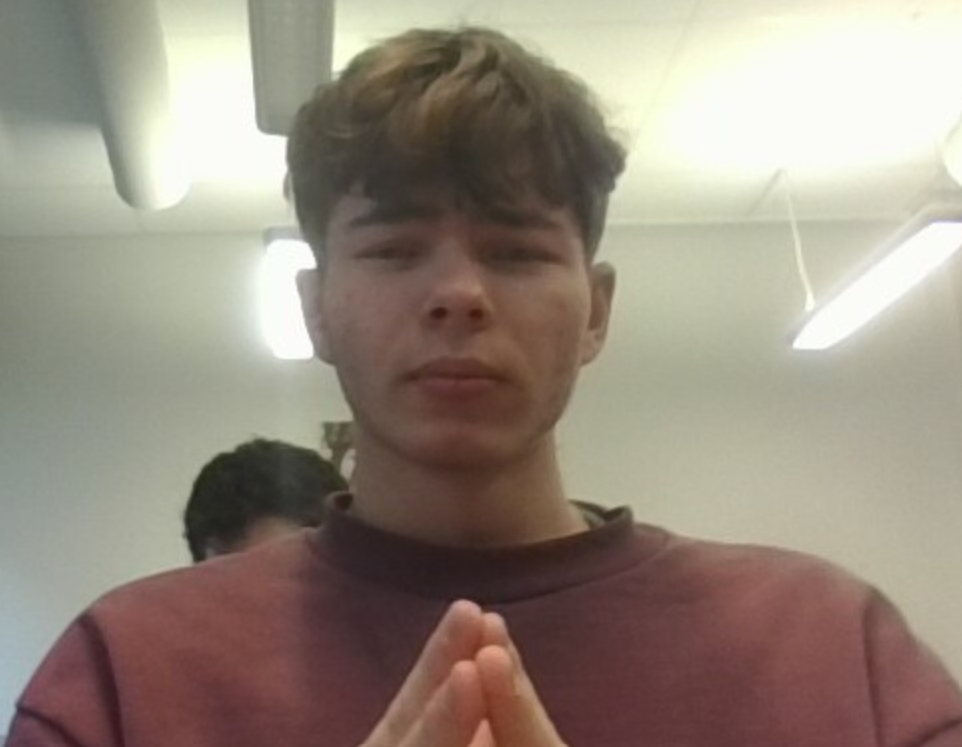
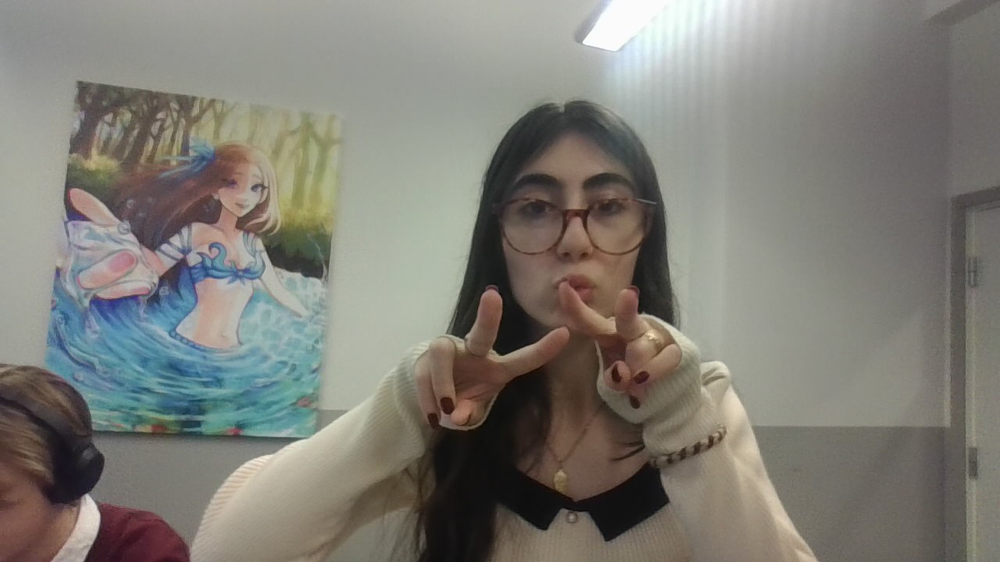

Elias johannson
Elias Johansson, ekonom från ett av Afrikas mest välbärgade länder, är en riktig tillgång på arbetsplatsen. Hans internationella erfarenhet och skarpa analytiska förmåga gör honom till en ovärderlig kollega, och hans humor ger alltid ett leende på läpparna. Vi ser fram emot fler berättelser om hans exklusiva bakgrund – och kanske några ekonomiska tips!
Läs här

Rebelle Barakat
Rebelle Barakat från Libanon är vår medieansvariga som alltid levererar med kreativitet och engagemang. Hennes förmåga att kommunicera och lyfta fram vårt varumärke gör henne till en ovärderlig del av vårt team. Vi är stolta över att ha Rebelle med oss!
lär här